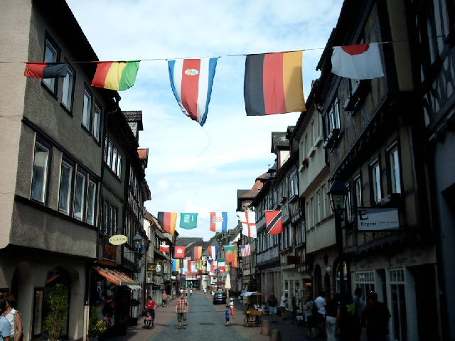

Ach, was war das eine Freude! Tolles und vor allem spannendes Endspiel. Für Fußballbegeisterte einfach gut. In meiner kleinen Wohnung im Kreis MIL sitze ich mit meiner Liebsten und genieße das.
Und dann: Der Oberpfaffe des neuen deutschen Reiches, dieser Bundespräsidentendarsteller, jauchzt vor Freude, obwohl kein Mensch eine auch nur irgendwie geartete Ahnung von Fußball bei ihm vermutet hätte. Die Kanzlerin grinst infantil in die Kameras und die Spieler huldigen ihr. Es ist zum Kotzen! Alle Freude weg. Durch die Städte am Untermain fahren hupende schwarz-rot-goldene Kolonnen.
Später wird es noch besser. Beim Empfang zurück in der „Heimat“ (wir dürfen das nun in Kenntnis der Sache als nationalistischen Heimatbegriff ansehen) machen die Spieler folgendes:
Nein, das ist nicht „geschmacklos“ (Tagesspiegel), das ist keine „Schnapsidee“ (Die Welt), das war nicht „respektlos im Siegesrausch“ (taz), das ist leider ganz einfach Rassismus, der andere ob ihrer Zuordnung (Gauchos = iberisch-stämmige und indigene Viehhirte) herabwürdigt. Kein besonders auffälliger Rassismus, nur eben der ekelhafte Rassismus der Mitte. Den es in Aschaffenburg gibt und in Alzenau, in Miltenberg und in Obernburg – und eben auch bei jenen Sportlern, die offenbar viel in den Waden, aber wenig im Kopf haben.
Die Alternative wäre die Unterstützung lokaler Fußballvereine – wenn wir dort nicht genau diesen Rassismus auch vermuten müssten. Es bleiben also nur die linken und alternativen Clubs, die es aber hier nicht gibt, in der Ödnis des Untermains.
Traut man der Tageszeitung, so ist zumindest in Miltenberg der gröbste nationalistische Unfug ausgeblieben bei der öffentlichen gemeinschaftlichen Fernsehglotzerei: „Rund 50 Prozent der Besucher [beim Public Viewing zum Spiel Deutschland gegen Ghana; mb] zeigten sich solidarisch mit den Deutschlandfarben auf der Wange, Hüten und Blumenketten“ (Bote vom Untermian, 23.06.14), aber Fahnen waren wohl nicht sehr beliebt. (mehr…)
 [Sollte das Foto nicht angezeigt werden, so liegt dies an Indymedia, nicht an uns. ]
2006, Fußball-WM in Deutschland, das angebliche Sommermärchen: In Miltenberg übernahm es die örtliche Werbegemeinschaft, mit einigen hundert Fahnen den Multikulturalismus zu erzwingen. Allerdings: In jede Reihe wurde auch eine deutsche Fahne gehängt, so dass die Übermacht der Einheimischen auch symbolisch demonstriert wurde.
Auch die nette Buchhändlerin sieht sich – eingeklemmt in den Konkurrenzkampf mit Weltbild und Amazon – genötigt, auf die schwarz-rot-goldene Karte zu setzen.
Foto: Gesehen in Miltenberg
Gut, die dümmsten Fans aller Vereine können auch ohne Weltmeisterschaft faschistischen Dreck propagieren; aber bei einer WM wird der Nationalismus zum Allgemeingut. … Und der Fußball, was ist mit dem Ballspiel bei der kommenden WM? Ich wünsche allen Fans vom Club, von den Kickers oder all den anderen netten Vereinen schöne Spiele, auch bei der WM. Das werden allerdings nicht unbedingt die mit deutscher Beteiligung sein, denn die Besten aus der Bundesliga spielen sowieso in anderen Nationaltrikots. Schließen wir uns also in fußballerischen Widerstandsnestern zusammen, sehen wir uns die Spiele ohne Nationalbesoffenheit an, meiden wir öffentliche Zusammenrottungen; sie könnten sich auch als gefährlich für unsere körperliche Unversehrtheit erweisen, wenn wir nicht bei jeder Schiedsrichterentscheidung parteiisch für die Bundeself grölen.
„Rechtsradikalismus und rechte Szene gibt es auch in unserer Region.“ So stand es in der Wochenendausgabe von Main-Echo/Bote vom Untermain. Beim Seminar „Methodenkoffer gegen Rechts“ am Donnerstag im Erlenbacher Jugendzentrum wurde demnach festgestellt: „So gibt es beispielsweise einen Supporter-Club für einen regionalen Fußballverein, die sich Trikots mit der aufgedruckten Zahl 88 anfertigen ließen, was zur Symbolik der rechten Szene zählt. Der achte Buchstabe im Alphabet ist das H, die 88 steht in rechten Kreisen für »Heil Hitler«. Ausländische Sportler werden mit Parolen beschimpft … Es ist zu beobachten, dass sich häufig auch in kleineren Ortschaften der Region Jugendliche zu fragwürdigen Gruppen mit rechter Gesinnung zusammenschließen. Es gilt, mit offenen Augen durch die Gegend zu laufen.“
Wir wollten einen zwei Jahre alten Beitrag zum Thema Fußball und Nationalismus bei kommunal bringen, da hatte ihn der Autor schon auf der eigenen Seite (wieder-)veröffentlicht. Dazu auch noch mehrere Links zu anderen, wichtigen Beiträgen zum gleichen Thema. So bleibt uns nur, den Beitrag Und wieder einmal: Die Tage des Tretens zu verlinken und damit auch bei kommunal zur Diskussion zu stellen.
Kaum zu glauben aber wahr: Die Creditreform (zu Risiken und Nebenwirkungen frag Deine lokale Schuldnerberatung) in Aschaffenburg setzt auf ihrer Homepage die Frauen-Fußball-WM als Werbemittel ein:
Zugegeben: Die Fußballfrauen können nichts dafür – und dass sie so schön gegen die Japanerinnen ausgeschieden sind, das verhagelt der Creditreform zumindest den Werbeerfolg etwas.
Was man oder frau aber gegen die Creditreform und andere Schuldeneintreiber machen könnte? Nun, das hat der schier göttliche Zinedine Zidane bei seinem allerletzten Spiel vorgemacht: Kopfarbeit (siehe unten)!
Aus ganz aktuellem Anlaß verweisen wir hier auf zwei Beiträge aus den Jahren 2006 und 2010, die sich – teils grundlegend – mit dem Fußball (der Männer) beschäftigen. Bei der derzeitigen Frauen-Fußball-Weltmeisterschaft gibt es zumindest noch nicht diese deutschtümelnden „schwarz-rot-geil“-Dummbeuteleien. In stiller Hoffnung, dass weibliches Kicken doch besser ist als männliches Rumgebolze verweisen wir also auf diese Beiträge auf unserer Schwesterseite disk.blogsport.de: Die Tage des Tretens auf dem Rasen und anderswo (2010) Der Ball hat ausgerollt (2006)
Suche
Du browst gerade in den Weblog-Archiven nach der Kategorie 'Sport'.